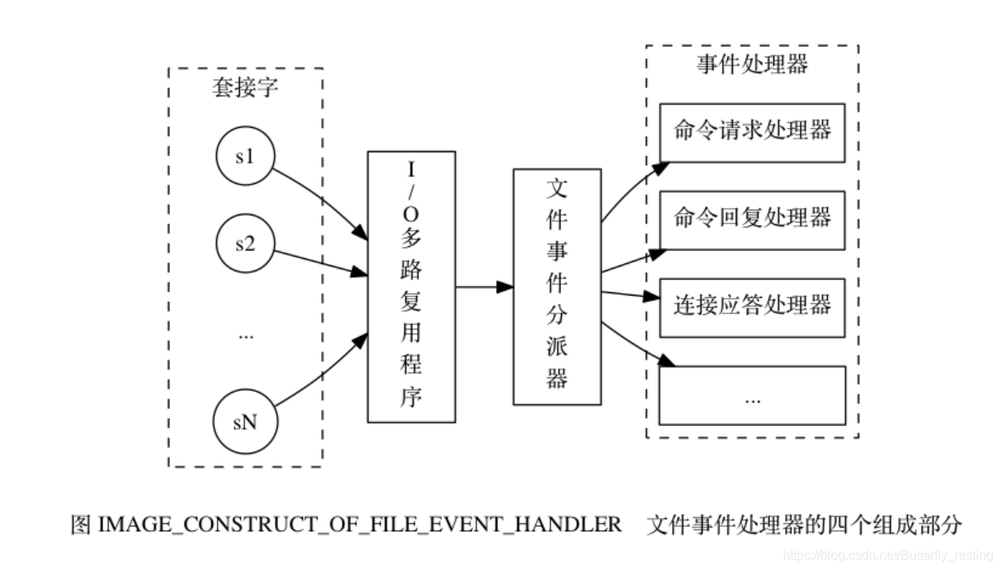

- Redis 持久化机制
- 缓存雪崩、缓存穿透、缓存预热、缓存更新、缓存降级等问题
- 热点数据和冷数据是什么
- Memcache与Redis的区别都有哪些？
- 单线程的redis为什么这么快
- redis的数据类型，以及每种数据类型的使用场景，Redis 内部结构
- redis的过期策略以及内存淘汰机制
- Redis 为什么是单线程的，优点
- 如何解决redis的并发竞争key问题
- Redis 集群方案应该怎么做？都有哪些方案？
- 有没有尝试进行多机redis 的部署？如何保证数据一致的？
- 对于大量的请求怎么样处理
- Redis 常见性能问题和解决方案？
- 讲解下Redis线程模型
- 为什么Redis的操作是原子性的，怎么保证原子性的？
- Redis事务
- Redis实现分布式锁
Redis 持久化机制
Redis是一个支持持久化的内存数据库，通过持久化机制把内存中的数据同步到硬盘文件来保证数据持久化。当Redis重启后通过把硬盘文件重新加载到内存，就能达到恢复数据的目的。
实现：单独创建fork()一个子进程，将当前父进程的数据库数据复制到子进程的内存中，然后由子进程写入到临时文件中，持久化的过程结束了，再用这个临时文件替换上次的快照文件，然后子进程退出，内存释放。
RDB是Redis默认的持久化方式。按照一定的时间周期策略把内存的数据以快照的形式保存到硬盘的二进制文件。即Snapshot快照存储，对应产生的数据文件为dump.rdb，通过配置文件中的save参数来定义快照的周期。（ 快照可以是其所表示的数据的一个副本，也可以是数据的一个复制品。）
AOF：Redis会将每一个收到的写命令都通过Write函数追加到文件最后，类似于MySQL的binlog。当Redis重启是会通过重新执行文件中保存的写命令来在内存中重建整个数据库的内容。
当两种方式同时开启时，数据恢复Redis会优先选择AOF恢复。
缓存雪崩、缓存穿透、缓存预热、缓存更新、缓存降级等问题
缓存雪崩
缓存雪崩我们可以简单的理解为：由于原有缓存失效，新缓存未到期间
(例如：我们设置缓存时采用了相同的过期时间，在同一时刻出现大面积的缓存过期)，所有原本应该访问缓存的请求都去查询数据库了，而对数据库CPU和内存造成巨大压力，严重的会造成数据库宕机。从而形成一系列连锁反应，造成整个系统崩溃。
解决办法：
大多数系统设计者考虑用加锁（最多的解决方案）或者队列的方式保证来保证不会有大量的线程对数据库一次性进行读写，从而避免失效时大量的并发请求落到底层存储系统上。还有一个简单方案就时讲缓存失效时间分散开。
缓存穿透
缓存穿透是指用户查询数据，在数据库没有，自然在缓存中也不会有。这样就导致用户查询的时候，在缓存中找不到，每次都要去数据库再查询一遍，然后返回空（相当于进行了两次无用的查询）。这样请求就绕过缓存直接查数据库，这也是经常提的缓存命中率问题。
解决办法：
最常见的则是采用布隆过滤器，将所有可能存在的数据哈希到一个足够大的bitmap中，一个一定不存在的数据会被这个bitmap拦截掉，从而避免了对底层存储系统的查询压力。
另外也有一个更为简单粗暴的方法，如果一个查询返回的数据为空（不管是数据不存在，还是系统故障），我们仍然把这个空结果进行缓存，但它的过期时间会很短，最长不超过五分钟。通过这个直接设置的默认值存放到缓存，这样第二次到缓冲中获取就有值了，而不会继续访问数据库，这种办法最简单粗暴。
5TB的硬盘上放满了数据，请写一个算法将这些数据进行排重。如果这些数据是一些32bit大小的数据该如何解决？如果是64bit的呢？
对于空间的利用到达了一种极致，那就是Bitmap和布隆过滤器(Bloom Filter)。
Bitmap： 典型的就是哈希表
缺点是，Bitmap对于每个元素只能记录1bit信息，如果还想完成额外的功能，恐怕只能靠牺牲更多的空间、时间来完成了。
布隆过滤器（推荐）
就是引入了k(k>1)k(k>1)个相互独立的哈希函数，保证在给定的空间、误判率下，完成元素判重的过程。
它的优点是空间效率和查询时间都远远超过一般的算法，缺点是有一定的误识别率和删除困难。
Bloom-Filter算法的核心思想就是利用多个不同的Hash函数来解决“冲突”。
Hash存在一个冲突（碰撞）的问题，用同一个Hash得到的两个URL的值有可能相同。为了减少冲突，我们可以多引入几个Hash，如果通过其中的一个Hash值我们得出某元素不在集合中，那么该元素肯定不在集合中。只有在所有的Hash函数告诉我们该元素在集合中时，才能确定该元素存在于集合中。这便是Bloom-Filter的基本思想。
Bloom-Filter一般用于在大数据量的集合中判定某元素是否存在。
受提醒补充：缓存穿透与缓存击穿的区别
缓存击穿：是指一个key非常热点，在不停的扛着大并发，大并发集中对这一个点进行访问，当这个key在失效的瞬间，持续的大并发就穿破缓存，直接请求数据。
解决方案;在访问key之前，采用SETNX（set if not exists）来设置另一个短期key来锁住当前key的访问，访问结束再删除该短期key。
增：给一个我公司处理的案例：背景双机拿token，token在存一份到redis，保证系统在token过期时都只有一个线程去获取token;线上环境有两台机器，故使用分布式锁实现。
缓存预热
缓存预热这个应该是一个比较常见的概念，相信很多小伙伴都应该可以很容易的理解，缓存预热就是系统上线后，将相关的缓存数据直接加载到缓存系统。这样就可以避免在用户请求的时候，先查询数据库，然后再将数据缓存的问题！用户直接查询事先被预热的缓存数据！
解决思路：
- 直接写个缓存刷新页面，上线时手工操作下；
- 数据量不大，可以在项目启动的时候自动进行加载；
- 定时刷新缓存；
缓存更新
除了缓存服务器自带的缓存失效策略之外（Redis默认的有6中策略可供选择），我们还可以根据具体的业务需求进行自定义的缓存淘汰，常见的策略有两种：
- 定时去清理过期的缓存；
- 当有用户请求过来时，再判断这个请求所用到的缓存是否过期，过期的话就去底层系统得到新数据并更新缓存。
两者各有优劣，第一种的缺点是维护大量缓存的key是比较麻烦的，第二种的缺点就是每次用户请求过来都要判断缓存失效，逻辑相对比较复杂！具体用哪种方案，大家可以根据自己的应用场景来权衡。
缓存降级
当访问量剧增、服务出现问题（如响应时间慢或不响应）或非核心服务影响到核心流程的性能时，仍然需要保证服务还是可用的，即使是有损服务。系统可以根据一些关键数据进行自动降级，也可以配置开关实现人工降级。
降级的最终目的是保证核心服务可用，即使是有损的。而且有些服务是无法降级的（如加入购物车、结算）。
以参考日志级别设置预案：
- 一般：比如有些服务偶尔因为网络抖动或者服务正在上线而超时，可以自动降级；
- 警告：有些服务在一段时间内成功率有波动（如在95~100%之间），可以自动降级或人工降级，并发送告警；
- 错误：比如可用率低于90%，或者数据库连接池被打爆了，或者访问量突然猛增到系统能承受的最大阀值，此时可以根据情况自动降级或者人工降级；
- 严重错误：比如因为特殊原因数据错误了，此时需要紧急人工降级。
服务降级的目的，是为了防止Redis服务故障，导致数据库跟着一起发生雪崩问题。因此，对于不重要的缓存数据，可以采取服务降级策略，例如一个比较常见的做法就是，Redis出现问题，不去数据库查询，而是直接返回默认值给用户。
热点数据和冷数据是什么
热点数据，缓存才有价值
对于冷数据而言，大部分数据可能还没有再次访问到就已经被挤出内存，不仅占用内存，而且价值不大。频繁修改的数据，看情况考虑使用缓存
对于上面两个例子，寿星列表、导航信息都存在一个特点，就是信息修改频率不高，读取通常非常高的场景。
对于热点数据，比如我们的某IM产品，生日祝福模块，当天的寿星列表，缓存以后可能读取数十万次。再举个例子，某导航产品，我们将导航信息，缓存以后可能读取数百万次。
数据更新前至少读取两次，缓存才有意义。这个是最基本的策略，如果缓存还没有起作用就失效了，那就没有太大价值了。
那存不存在，修改频率很高，但是又不得不考虑缓存的场景呢？有！比如，这个读取接口对数据库的压力很大，但是又是热点数据，这个时候就需要考虑通过缓存手段，减少数据库的压力，比如我们的某助手产品的，点赞数，收藏数，分享数等是非常典型的热点数据，但是又不断变化，此时就需要将数据同步保存到Redis缓存，减少数据库压力。
Memcache与Redis的区别都有哪些
- 存储方式 Memecache把数据全部存在内存之中，断电后会挂掉，数据不能超过内存大小。 Redis有部份存在硬盘上，redis可以持久化其数据
- 数据支持类型 memcached所有的值均是简单的字符串，redis作为其替代者，支持更为丰富的数据类型 ，提供list，set，zset，hash等数据结构的存储
- 使用底层模型不同 它们之间底层实现方式 以及与客户端之间通信的应用协议不一样。 Redis直接自己构建了VM 机制 ，因为一般的系统调用系统函数的话，会浪费一定的时间去移动和请求。
- value 值大小不同：Redis 最大可以达到 512M；memcache 只有 1mb。
- redis的速度比memcached快很多
- Redis支持数据的备份，即master-slave模式的数据备份。
单线程的redis为什么这么快
- 纯内存操作
- 单线程操作，避免了频繁的上下文切换
- 采用了非阻塞I/O多路复用机制
redis的数据类型，以及每种数据类型的使用场景
- String
这个其实没啥好说的，最常规的set/get操作，value可以是String也可以是数字。一般做一些复杂的计数功能的缓存。 - hash
这里value存放的是结构化的对象，比较方便的就是操作其中的某个字段。博主在做单点登录的时候，就是用这种数据结构存储用户信息，以cookieId作为key，设置30分钟为缓存过期时间，能很好的模拟出类似session的效果。 - list
使用List的数据结构，可以做简单的消息队列的功能。另外还有一个就是，可以利用lrange命令，做基于redis的分页功能，性能极佳，用户体验好。本人还用一个场景，很合适—取行情信息。就也是个生产者和消费者的场景。LIST可以很好的完成排队，先进先出的原则。 - set
因为set堆放的是一堆不重复值的集合。所以可以做全局去重的功能。为什么不用JVM自带的Set进行去重？因为我们的系统一般都是集群部署，使用JVM自带的Set，比较麻烦，难道为了一个做一个全局去重，再起一个公共服务，太麻烦了。
另外，就是利用交集、并集、差集等操作，可以计算共同喜好，全部的喜好，自己独有的喜好等功能。 - sorted set
sorted set多了一个权重参数score,集合中的元素能够按score进行排列。可以做排行榜应用，取TOP N操作。
Redis 内部结构
- dict 本质上是为了解决算法中的查找问题（Searching）是一个用于维护key和value映射关系的数据结构，与很多语言中的Map或dictionary类似。 本质上是为了解决算法中的查找问题（Searching）
- sds sds就等同于char * 它可以存储任意二进制数据，不能像C语言字符串那样以字符’\0’来标识字符串的结 束，因此它必然有个长度字段。
- skiplist （跳跃表） 跳表是一种实现起来很简单，单层多指针的链表，它查找效率很高，堪比优化过的二叉平衡树，且比平衡树的实现
- quicklist
- ziplist 压缩表 ziplist是一个编码后的列表，是由一系列特殊编码的连续内存块组成的顺序型数据结构
Redis的过期策略以及内存淘汰机制
redis采用的是定期删除+惰性删除策略。
为什么不用定时删除策略?
定时删除,用一个定时器来负责监视key，过期则自动删除。虽然内存及时释放，但是十分消耗CPU资源。在大并发请求下，CPU要将时间应用在处理请求，而不是删除key，因此没有采用这一策略。
定期删除+惰性删除是如何工作的
定期删除，redis默认每个100ms检查，是否有过期的key,有过期key则删除。需要说明的是，redis不是每个100ms将所有的key检查一次，而是随机抽取进行检查(如果每隔100ms,全部key进行检查，redis岂不是卡死)。因此，如果只采用定期删除策略，会导致很多key到时间没有删除。
于是，惰性删除派上用场。也就是说在你获取某个key的时候，redis会检查一下，这个key如果设置了过期时间那么是否过期了？如果过期了此时就会删除。
采用定期删除+惰性删除就没其他问题了么?
不是的，如果定期删除没删除key。然后你也没即时去请求key，也就是说惰性删除也没生效。这样，redis的内存会越来越高。那么就应该采用内存淘汰机制。
在redis.conf中有一行配置1
maxmemory-policy volatile-lru
该配置就是配内存淘汰策略的1
2
3
4
5
6volatile-lru #从已设置过期时间的数据集（server.db[i].expires）中挑选最近最少使用的数据淘汰
volatile-ttl #从已设置过期时间的数据集（server.db[i].expires）中挑选将要过期的数据淘汰
volatile-random #从已设置过期时间的数据集（server.db[i].expires）中任意选择数据淘汰
allkeys-lru #从数据集（server.db[i].dict）中挑选最近最少使用的数据淘汰
allkeys-random #从数据集（server.db[i].dict）中任意选择数据淘汰
no-enviction（驱逐）#禁止驱逐数据，新写入操作会报错
ps：如果没有设置 expire 的key, 不满足先决条件(prerequisites); 那么 volatile-lru, volatile-random 和 volatile-ttl 策略的行为, 和 noeviction(不删除) 基本上一致。
Redis 为什么是单线程的
官方FAQ表示，因为Redis是基于内存的操作，CPU不是Redis的瓶颈，Redis的瓶颈最有可能是机器内存的大小或者网络带宽。既然单线程容易实现，而且CPU不会成为瓶颈，那就顺理成章地采用单线程的方案了（毕竟采用多线程会有很多麻烦！）Redis利用队列技术将并发访问变为串行访问。
- 绝大部分请求是纯粹的内存操作（非常快速）
- 采用单线程,避免了不必要的上下文切换和竞争条件
- 非阻塞IO优点：
- 速度快，因为数据存在内存中，类似于HashMap，HashMap的优势就是查找和操作的时间复杂度都是O(1)
- 支持丰富数据类型，支持string，list，set，sorted set，hash
- 支持事务，操作都是原子性，所谓的原子性就是对数据的更改要么全部执行，要么全部不执行
- 丰富的特性：可用于缓存，消息，按key设置过期时间，过期后将会自动删除如何解决redis的并发竞争key问题
同时有多个子系统去set一个key。这个时候要注意什么
不推荐使用redis的事务机制。因为我们的生产环境，基本都是redis集群环境，做了数据分片操作。你一个事务中有涉及到多个key操作的时候，这多个key不一定都存储在同一个redis-server上。因此，redis的事务机制，十分鸡肋。
- 如果对这个key操作，不要求顺序：准备一个分布式锁，大家去抢锁，抢到锁就做set操作即可
- 如果对这个key操作，要求顺序：分布式锁+时间戳。假设这会系统B先抢到锁，将key1设置为{valueB 3:05}。接下来系统A抢到锁，发现自己的valueA的时间戳早于缓存中的时间戳，那就不做set操作了。以此类推。
- 利用队列，将set方法变成串行访问也可以redis遇到高并发，如果保证读写key的一致性，对redis的操作都是具有原子性的，是线程安全的操作，你不用考虑并发问题，redis内部已经帮你处理好并发的问题了
Redis 集群方案应该怎么做？都有哪些方案
twemproxy，大概概念是，它类似于一个代理方式，使用时在本需要连接redis的地方改为连接twemproxy， 它会以一个代理的身份接收请求并使用一致性hash算法，将请求转接到具体redis，将结果再返回twemproxy。
缺点： twemproxy 自身单端口实例的压力，使用一致性 hash 后，对 redis 节点数量改变时候的计算值的改变，数据无法自动移动到新的节点。codis，目前用的最多的集群方案，基本和twemproxy一致的效果，但它支持在 节点数量改变情况下，旧节点数据可恢复到新hash节点redis cluster3.0自带的集群，特点在于他的分布式算法不是一致性 hash，而是hash 槽的概念，以及自身支持节点设置从节点。具体看官方文档介绍。
有没有尝试进行多机redis 的部署？如何保证数据一致的
主从复制，读写分离
一类是主数据库（master）一类是从数据库（slave），主数据库可以进行读写操作，当发生写操作的时候自动将数据同步到从数据库，而从数据库一般是只读的，并接收主数据库同步过来的数据，一个主数据库可以有多个从数据库，而一个从数据库只能有一个主数据库
对于大量的请求怎么样处理
redis是一个单线程程序，也就说同一时刻它只能处理一个客户端请求；
redis是通过IO多路复用（select，epoll, kqueue，依据不同的平台，采取不同的实现）来处理多个客户端请求的
Redis 常见性能问题和解决方案
- Master 最好不要做任何持久化工作，如 RDB 内存快照和 AOF 日志文件
- 如果数据比较重要，某个 Slave 开启 AOF 备份数据，策略设置为每秒同步一次
- 为了主从复制的速度和连接的稳定性， Master 和 Slave 最好在同一个局域网内
- 尽量避免在压力很大的主库上增加从库
- 主从复制不要用图状结构，用单向链表结构更为稳定，即：
Master <- Slave1 <- Slave2 <- Slave3…
讲解下Redis线程模型
文件事件处理器包括分别是套接字、 I/O 多路复用程序、 文件事件分派器（dispatcher）、 以及事件处理器。使用 I/O 多路复用程序来同时监听多个套接字， 并根据套接字目前执行的任务来为套接字关联不同的事件处理器。当被监听的套接字准备好执行连接应答（accept）、读取（read）、写入（write）、关闭（close）等操作时，与操作相对应的文件事件就会产生，这时文件事件处理器就会调用套接字之前关联好的事件处理器来处理这些事件。I/O 多路复用程序负责监听多个套接字， 并向文件事件分派器传送那些产生了事件的套接字。
工作原理：
尽管多个文件事件可能会并发地出现， 但 I/O 多路复用程序总是会将所有产生事件的套接字都入队到一个队列里面，然后通过这个队列，以有序（sequentially）、同步（synchronously）、每次一个套接字的方式向文件事件分派器传送套接字： 当上一个套接字产生的事件被处理完毕之后（该套接字为事件所关联的事件处理器执行完毕）， I/O 多路复用程序才会继续向文件事件分派器传送下一个套接字。如果一个套接字又可读又可写的话， 那么服务器将先读套接字， 后写套接字。

为什么Redis的操作是原子性的，怎么保证原子性的
对于Redis而言，命令的原子性指的是：一个操作的不可以再分，操作要么执行，要么不执行。
Redis的操作之所以是原子性的，是因为Redis是单线程的。
Redis本身提供的所有API都是原子操作，Redis中的事务其实是要保证批量操作的原子性。
多个命令在并发中也是原子性的吗？
不一定，将get和set改成单命令操作，incr。使用Redis的事务，或者使用Redis+Lua==的方式实现
Redis事务
Redis事务功能是通过MULTI、EXEC、DISCARD和WATCH 四个原语实现的
Redis会将一个事务中的所有命令序列化，然后按顺序执行。
- redis 不支持回滚“Redis 在事务失败时不进行回滚，而是继续执行余下的命令”， 所以 Redis 的内部可以保持简单且快速。
- 如果在一个事务中的命令出现错误，那么所有的命令都不会执行；
- 如果在一个事务中出现运行错误，那么正确的命令会被执行。
实现细节
注：redis的discard只是结束本次事务,正确命令造成的影响仍然存在.
- MULTI命令用于开启一个事务，它总是返回OK。 MULTI执行之后，客户端可以继续向服务器发送任意多条命令，这些命令不会立即被执行，而是被放到一个队列中，当EXEC命令被调用时，所有队列中的命令才会被执行。
- EXEC：执行所有事务块内的命令。返回事务块内所有命令的返回值，按命令执行的先后顺序排列。当操作被打断时，返回空值 nil 。
- 通过调用DISCARD，客户端可以清空事务队列，并放弃执行事务，并且客户端会从事务状态中退出。
- WATCH 命令可以为 Redis 事务提供 check-and-set （CAS）行为。 可以监控一个或多个键，一旦其中有一个键被修改（或删除），之后的事务就不会执行，监控一直持续到EXEC命令。
Redis实现分布式锁
Redis为单进程单线程模式，采用队列模式将并发访问变成串行访问，且多客户端对Redis的连接并不存在竞争关系Redis中可以使用SETNX命令实现分布式锁。
将 key 的值设为 value ，当且仅当 key 不存在。 若给定的 key 已经存在，则 SETNX 不做任何动作1
2
3
4
5
6127.0.0.1:6379> setnx lockKey value1
(integer) 1
127.0.0.1:6379> setnx lockKey value2
(integer) 0
127.0.0.1:6379> get lockKey
"value1"
解锁：使用 del key 命令就能释放锁
解决死锁：
1）通过Redis中expire()给锁设定最大持有时间，如果超过，则Redis来帮我们释放锁。
2） 使用 setnx key “当前系统时间+锁持有的时间”和getset key “当前系统时间+锁持有的时间”组合的命令就可以实现。